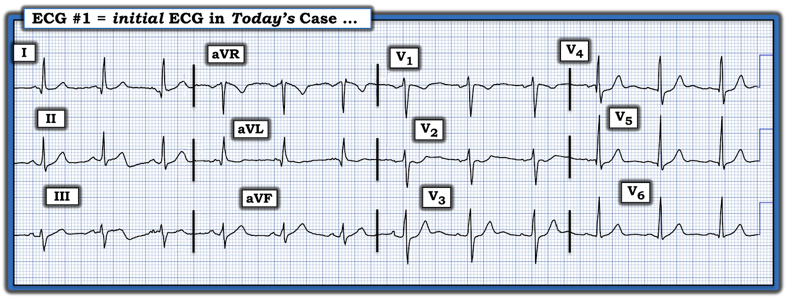
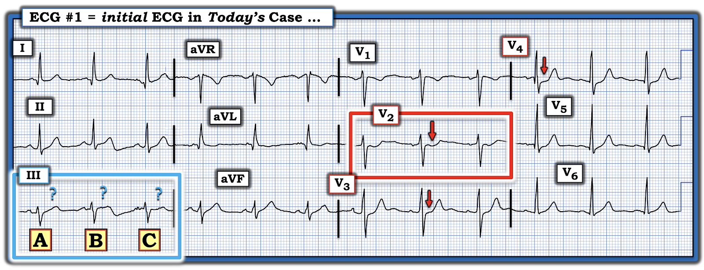

ECG Blog #521 — Nhồi máu cơ tim thành dưới? — Còn gì khác không?
Điện tâm đồ ở Hình 1 được ghi từ một người đàn ông trung niên có tiền sử hút thuốc lá lâu năm — đến khám vì CP dữ dội mới khởi phát (đau ngực – Chest Pain).
- Bệnh nhân kể đã có 2 cơn CP dữ dội — mỗi cơn đều tự hết. Sau đó ông đến ED (khoa cấp cứu – Emergency Department) vài giờ sau cơn thứ 2 (tức là vào lúc điện tâm đồ #1 được ghi, ông không bị CP).
- Nồng độ Troponin ban đầu âm tính đối với nhồi máu cấp.
CÂU HỎI:
- Bạn đọc điện tâm đồ ở Hình 1 như thế nào?
- Có nên kích hoạt phòng thông tim (cath lab) không?


SUY NGHĨ CỦA TÔI về điện tâm đồ hôm nay:
Điện tâm đồ ở Hình 1 cho thấy nhịp xoang đều, tần số ~80 lần/phút. Các khoảng (PR, QRS, QTc) và trục đều bình thường. Không có lớn buồng tim.
Về Thay đổi Q-R-S-T:
- Sóng Q: Có sóng q ở các chuyển đạo bên (tức là các chuyển đạo I,aVL; và các chuyển đạo V4,V5,V6). Các sóng q này có hình dạng của sóng q vách bình thường — vì tất cả các sóng q này đều hẹp và nhỏ.
- Tăng tiến sóng R: Bình thường (tức là biên độ sóng R tăng dần khi đi qua các chuyển đạo trước ngực — với vùng chuyển tiếp xảy ra bình thường trong khoảng V2 đến V4).
Về Thay đổi ST-sóng T:
- Ở bệnh nhân CP mới này — "mắt" tôi lập tức bị hút vào ST chênh xuống dạng "khoét lõm" ở chuyển đạo V2 (trong hình chữ nhật ĐỎ ở Hình 2).
- ST chênh xuống này tiếp tục ở các chuyển đạo kế cận V3,V4 (mũi tên ĐỎ ở các chuyển đạo trước ngực này) — nhưng phần lớn đã hết khi đến chuyển đạo V5.
- Thay đổi ST-T ở các chuyển đạo dưới khó đánh giá hơn (Xem bên dưới).


==========================
TRẢ LỜI: Tổng Hợp Lại Tất cả . . .
Có nhiều lý do khiến việc đánh giá ca hôm nay trở nên khó khăn. Đáng tiếc là chúng ta thiếu nhiều chi tiết và chỉ có thông tin theo dõi hạn chế. Dù vậy, mục đích của tôi khi trình bày ca này — là vẫn có thể rút ra những điểm sau từ bệnh sử ngắn gọn được cung cấp, và từ điện tâm đồ ban đầu hôm nay:
- Bệnh sử có vài cơn CP mới khởi phát và dữ dội ở người đàn ông trung niên có tiền sử hút thuốc lá lâu năm này ngay lập tức xếp ông vào nhóm nguy cơ cao hơn bị một biến cố tim cấp. Nhận thức được bối cảnh lâm sàng này cần làm hạ thấp ngưỡng của chúng ta trong việc chấp nhận các dấu hiệu ST-T là bất thường.
- Nếu có sẵn điện tâm đồ trước đây để so sánh thì việc xác định các thay đổi ST-T thấy trên điện tâm đồ #1 có phải là cấp tính hay không sẽ dễ dàng hơn nhiều.
- Nên ghi lại điện tâm đồ trong vòng 10-20 phút sau bản ghi đầu tiên khi triệu chứng mới xuất hiện và còn chưa chắc các dấu hiệu ST-T có phải cấp tính hay không — vì các thay đổi ST-T "động" có giá trị chẩn đoán đôi khi có thể thấy được chỉ trong vòng vài phút (Xem ECG Blog #115 — và ECG Blog #459).
- Làm siêu âm tim tại giường đôi khi có thể giúp chẩn đoán nếu cho thấy rối loạn vận động thành khu trú. (Dù siêu âm tim có giá trị chẩn đoán nếu dương tính — một siêu âm tim bình thường không loại trừ biến cố cấp nếu bệnh nhân không đau ngực vào lúc làm siêu âm).
- hs-Troponin bình thường ban đầu ở ca hôm nay hoàn toàn không loại trừ một biến cố tim cấp (Xem ECG Blog #508). Ngoài kích thước ổ nhồi máu, Troponin có tăng hay không còn tùy thuộc vào việc động mạch "thủ phạm" bị tắc trong bao lâu — điều mà chúng ta không biết ở ca hôm nay. Nhưng nếu khoảng thời gian động mạch "thủ phạm" bị tắc rất ngắn — Troponin có thể hoàn toàn không tăng (và đôi khi — 2 giá trị Troponin đầu tiên có thể trở về bình thường dù sau đó bệnh nhân vẫn tiến triển thành STEMI).
Hãy cân nhắc thêm các điểm sau:
- Bệnh nhân không bị CP vào lúc ghi điện tâm đồ #1. Điều này gợi ý rằng tình trạng tắc mạch vành cấp có thể đã tự hết — khi đó các bất thường ST-T cấp vốn có trong lúc CP có thể cải thiện đáng kể (và thậm chí biến mất).
- Dù vậy — bình thường ở các chuyển đạo V2 và V3 nên có ST chênh lên nhẹ, dốc lên thoai thoải. Đó là lý do tại sao ở bệnh nhân CP mới — dấu hiệu ST chênh xuống tối đa ở các chuyển đạo V2,V3,V4 (như thấy trên điện tâm đồ #1) — là dấu hiệu chẩn đoán nhồi máu cơ tim (MI) thành sau cấp cho đến khi chứng minh được điều ngược lại! (Xem ECG Blog #351 — và ECG Blog #298, cùng nhiều bài khác).
- LƯU Ý: Do thành dưới và thành sau của thất trái có chung nguồn cấp máu — tôi luôn tìm các thay đổi cấp ở chuyển đạo dưới mỗi khi nghi ngờ OMI thành sau cấp. Đáng tiếc là hình dạng ST-T không nhất quán ở các chuyển đạo dưới của điện tâm đồ #1 khiến việc đánh giá các chuyển đạo dưới gần như không thể (tức là Trong khi phức bộ B trong hình chữ nhật XANH gợi ý đoạn ST thẳng đuỗn, tối cấp kèm sóng T đảo ngược ở phần cuối — thì các phức bộ A và C trông không có vẻ cấp tính).
ĐIỀU CỐT LÕI:
ST chênh xuống tối đa ở các chuyển đạo V2,V3,V4 ở bệnh nhân có bệnh sử CP mới này gợi ý OMI thành sau cấp cho đến khi chứng minh được điều ngược lại. Việc biết rằng CP của bệnh nhân đã hết hoàn toàn vào lúc ghi điện tâm đồ #1 có thể giải thích vì sao thay đổi ST-T ở các chuyển đạo còn lại tương đối khiêm tốn.
- Lý tưởng nhất — nên kích hoạt phòng thông tim ngay khi thấy điện tâm đồ #1.
- Nếu bác sĩ can thiệp còn ngần ngại thông tim cho bệnh nhân ở thời điểm này — thì các hành động sau có thể giúp thủ thuật sớm được chấp nhận thực hiện: i) Ghi lại điện tâm đồ trong vòng 10-20 phút — và nếu bản ghi lại đầu tiên này không cho thấy thay đổi động — thì tiếp tục ghi thêm vài bản nữa trong vòng một giờ; — ii) Ngay lập tức ghi lại điện tâm đồ nếu vào bất kỳ lúc nào CP của bệnh nhân tái phát; — iii) Tìm điện tâm đồ trước đây của bệnh nhân (nhiều khả năng sẽ xác nhận rằng ST chênh xuống ở các chuyển đạo V2,V3,V4 là cấp tính); — iv) Làm siêu âm tim tại giường, tìm rối loạn vận động thành khu trú; — và, v) Tìm bất kỳ mức tăng nào ở giá trị Troponin lần 2 (điều mà ở bệnh nhân có triệu chứng mới đáng lo ngại là chỉ định thông tim kịp thời — ngay cả khi thay đổi điện tâm đồ chưa đủ để chẩn đoán).
==========================
DIỄN TIẾN CỦA CA BỆNH:
Thông tin theo dõi của tôi còn hạn chế — nhưng các kết quả tôi có được củng cố thêm cho các điểm lâm sàng nêu trên:
- Troponin lần sau tăng ở mức ~60 (tôi không rõ đơn vị hay giá trị tham chiếu — nhưng giá trị 60 rõ ràng là tăng).
- Một điện tâm đồ ghi lại nhiều giờ sau đó dường như cho thấy thay đổi ít cấp tính hơn so với điện tâm đồ #1.
- Siêu âm tim tại giường làm vào ngày hôm sau cho thấy rối loạn vận động thành khu trú ở các vùng bên và sau-bên.
- Thông tim làm vào ngày hôm sau xác nhận LCx (Left Circumflex – động mạch mũ trái) là động mạch "thủ phạm" (tôi không biết thêm về các kết quả thông tim khác).
Bài học cần rút ra:
- Chờ đến khi có ST chênh lên mới kích hoạt phòng thông tim sẽ bỏ sót một tỷ lệ đáng kể các trường hợp tắc mạch vành cấp. OMI thành sau cấp dễ nhận ra nhất ở bệnh nhân CP mới nhờ ST chênh xuống tối đa ở các chuyển đạo V2,V3,V4 — dấu hiệu này dễ nhận ra hơn nhiều và đáng tin cậy hơn so với cố gắng đánh giá các biên độ bị giảm thấp thu được từ chuyển đạo phía sau (Xem ECG Blog #80). OMI thành sau là ví dụ tốt nhất cho thấy chúng ta có thể đưa ra chẩn đoán giả định tắc mạch vành cấp mà không đòi hỏi phải có ST chênh lên
- Chẩn đoán OMI cấp lẽ ra đã có thể được đưa ra sớm hơn đáng kể ở ca hôm nay.
- Chậm trễ chẩn đoán (và do đó chậm trễ điều trị tái tưới máu cho tắc mạch vành cấp) phải trả giá. Lợi ích lớn nhất của tái tưới máu đạt được trong vòng 4 giờ đầu sau khi tắc mạch vành cấp (Cứ mỗi 2 giờ chậm trễ thì lượng cơ tim bị nhồi máu tăng thêm 60%). Tài liệu minh chứng cho các Bài học cần rút ra này có trong 3 bài sau trên Dr. Smith's ECG Blog ( = bài ngày 8 tháng Hai năm 2026 — bài ngày 15 tháng Một năm 2026 — và bài ngày 23 tháng Mười năm 2025 — với Bình luận của tôi ở cuối trang trong mỗi bài này).
==================================
Lời cảm ơn: Xin cảm ơn Hisham Alshamekh (từ Ai Cập) đã chia sẻ ca bệnh và bản ghi này.
==================================

==================================
PHẦN BỔ SUNG (ngày 7 tháng 3 năm 2026):
Để tìm hiểu thêm về khái niệm và cách đọc điện tâm đồ của các OMI (không thỏa mãn tiêu chuẩn STEMI dựa trên milimét):
- Hãy xem ECG Blog #337 — bài điểm lại một ca bệnh tập trung vào phân biệt giữa "NSTEMI" với OMI.
- Hãy xem 2 Audio Pearl ở cuối trang này.
- Hãy xem Hình 3 — điểm lại một số dấu hiệu điện tâm đồ cần tìm khi bạn nghi ngờ OMI cấp ở bệnh nhân không thỏa mãn tiêu chuẩn STEMI dựa trên milimét mà tôi điểm lại bên dưới Hình này.

= = = = =
Lưu ý MẤU CHỐT #1: Việc khăng khăng đòi thỏa mãn tiêu chuẩn STEMI dựa trên milimét trước khi cân nhắc thông tim kịp thời kèm PCI (hoặc điều trị tiêu sợi huyết khi không có khả năng thông tim 24/7) — sẽ bỏ sót ít nhất 1/3 tổng số trường hợp tắc mạch vành cấp. Ở bệnh nhân CP mới — chú ý đến các dấu hiệu điện tâm đồ trong Hình 3 có thể giúp bạn nhận ra những bệnh nhân OMI cấp này dù không có tiêu chuẩn STEMI.
= = = = =
Lưu ý MẤU CHỐT #2: Lượng cơ tim còn khả năng sống bị mất thực ra lớn hơn nhiều so với mức ngụ ý trong Lưu ý Mấu chốt #1 — vì ngay cả với những bệnh nhân mà "STEMI" cuối cùng có được nhận ra — thì do chờ cho đến khi tiêu chuẩn dựa trên milimét cuối cùng được thỏa mãn, liệu pháp tái tưới máu cần thiết (PCI hoặc điều trị tiêu sợi huyết) quá thường xuyên bị trì hoãn (thường là nhiều giờ!). Thời gian là yếu tố sống còn! — vì lợi ích cứu cơ tim lớn nhất đạt được khi liệu pháp tái tưới máu được thực hiện trong vòng vài giờ đầu! (với lời tiên tri tự ứng nghiệm rằng "mô hình STEMI" lỗi thời và kém cỏi cứ được duy trì trong y văn — vì dữ liệu sẽ được ghi nhận rằng PCI được thực hiện "trong vòng vài phút" sau khi có ST chênh lên kiểu STEMI [bỏ qua thực tế lâm sàng là tiêu chuẩn OMI thường đã có mặt từ nhiều giờ trước đó! ] ).
= = = = =
Lưu ý #3: Xem ECG Blog #318 — để hiểu rõ về T-QRS-D (Terminal QRS Distortion – biến dạng phần cuối QRS = gạch đầu dòng thứ 2 của tôi trong Hình 4).
=================
"STEMI" được định nghĩa như thế nào:
Tôi trích dưới đây phần Akbar và Mountfort dẫn trong StatPearls, 2024 — về các Hướng dẫn điện tâm đồ để định nghĩa "STEMI" của AHA (Hội Tim mạch Hoa Kỳ – American Heart Association), ACC (Trường môn Tim mạch Hoa Kỳ – American College of Cardiology), ESC (Hội Tim mạch châu Âu – European Society of Cardiology), và WHF (Liên đoàn Tim mạch Thế giới – World Heart Federation):
- ST chênh lên ≥1 mm mới xuất hiện tại điểm J ở 2 chuyển đạo liên tiếp (trừ các chuyển đạo V2 và V3).
- Ở chuyển đạo V2 và V3:
- ST chênh lên ≥2 mm ở nam giới >40 tuổi.
- ST chênh lên ≥2.5 ở nam giới ≤40 tuổi.
- ST chênh lên ≥1.5 mm ở nữ giới.
==================================

ECG Media PEARL #10 (10 phút Audio) — điểm lại lý do tại sao thuật ngữ “OMI” ( = Occlusion-based MI – nhồi máu cơ tim do tắc) nên thay thế thuật ngữ STEMI quen thuộc hơn — và, điểm lại những điều cơ bản về cách dự đoán động mạch "thủ phạm".

ECG Media PEARL #11 (6 phút Audio) — Điểm lại cách nhận biết LIỆU động mạch “thủ phạm” (tức là, động mạch bị tắc cấp) đã được tái tưới máu hay chưa, dựa vào các tiêu chuẩn lâm sàng và điện tâm đồ.